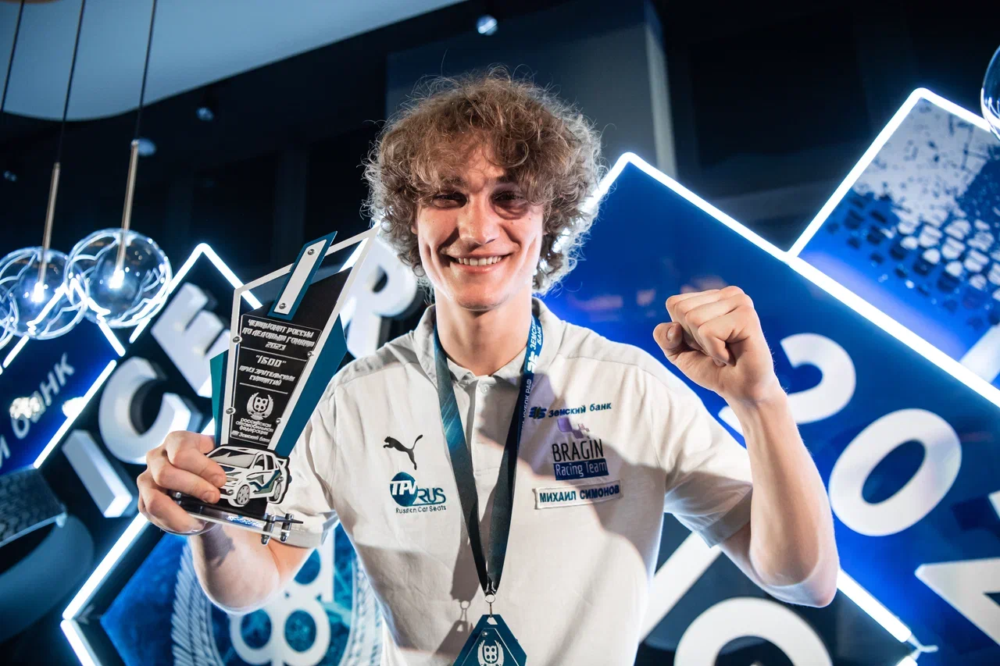
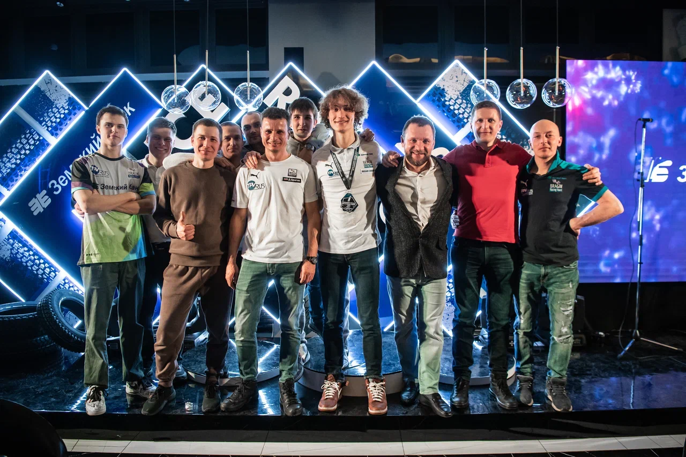

«Земский банк» выступил спонсором трансляций всероссийских автогонок на льду
Взяли под крыло ледовую трассу
«Земский банк» выступил спонсором трансляций всероссийских автогонок на льду
На протяжении многих лет «Земский банк» поддерживает развитие различных видов спорта. Помощь многим спортивным направлениям является не только приоритетной установкой благотворительной программы банка, но и важной частью его корпоративной культуры. «Спорт всегда был для нас в приоритете. Мы являемся титульным спонсором чемпионата Самарской области по футболу-2023. В прошлом году спонсировали международные гонки на боевой классике Classic Touring Cup, поддержали проведение Всероссийского турнира по бодибилдингу и фитнесу NABBA -2022 и многие другие спортивные мероприятия на территории региона», - отметил глава «Земского банка» Максим Симонов, добавив, что в этом году банк расширил свою благотворительную деятельность. Помимо того, что он продолжает оказывать посильную помощь Российской автомобильной федерации в организации этапов чемпионата по ледовым гонкам, в этом году он выступил спонсором онлайн трансляции всех пяти этапов чемпионата России по ледовым автогонкам. «По нашему мнению, данное направление автоспорта незаслуженно находится в тени ралли-кросса и Российской серии кольцевых автогонок, которые активно развиваются», - отметил Максим Симонов.
Сезон 2023 года в ранге Чемпионата и Кубка России состоял из пяти этапов. В течении трех месяцев 44 российских гонщика в своих классах определяли сильнейших на разных ледовых площадках: в селе Усады и города Набережные Челны в Республике Татарстан, на льду реки Волга в Чебоксарах и Тольятти, где прошли открытие и финалы.
Три пилота Самарской области завершили выступление в чемпионате и Кубке России по ледовым гонкам на пьедестале почета в личном зачете. В командном - первенствовала тольяттинская «Bragin Racing Team», основателем и руководителем которой является спортивный функционер и председатель правления «Земского банка» Максим Симонов.
А лидер команды - Михаил Симонов второй раз стал чемпионом России по ледовым гонкам в классе «1600». «Серебряным» призером чемпионата-2023 стал нижнекамец Олег Жаворонков из команды Kama Tyres, выигравший пятый этап в Тольятти. А «бронзу» тольяттинец Павел Кальманович на Lada Granta из «Innostage-AG Team».
«Этот сезон ледовых гонок прошел с большим успехом. За два с небольшим месяца мы провели пять этапов, которые подарили множество ярких моментов. А прямые трансляции в интернете сделали наши соревнования еще более популярными и привлекательными как для болельщиков, так и для участников. У нас есть много новых идей, и уже сейчас мы начинаем подготовку к будущему зимнему сезону», - цитирует пресс-служба Российской автомобильной федерации председателя комиссии РАФ по ледовым и трековым гонкам, главного судью соревнований Игоря Коновалова.

